Volume 15Canções de Natal e melodias fáceis41 peças · 54 páginas
Volume 15Canções de Natal e melodias fáceis41 peças · 54 páginas3,99 €Comprar
Piano Learning · PDF
564 peças · 1.933 páginas de música · 14 volumes · 10 idiomas
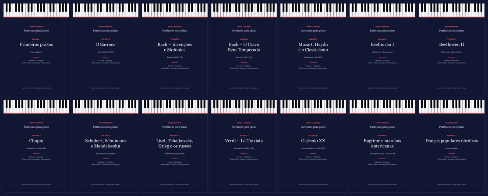
Os 14 volumes: 564 peças, 1.933 páginas de música.
55,86 €19,99 €−64%
Volume 15Canções de Natal e melodias fáceis41 peças · 54 páginas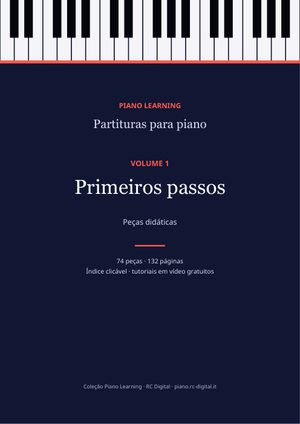
Volume 1Primeiros passos74 peças · 132 páginas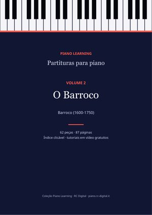
Volume 2O Barroco62 peças · 87 páginas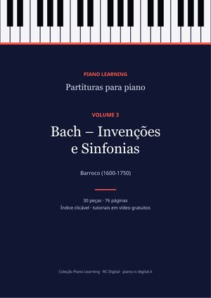
Volume 3Bach – Invenções e Sinfonias30 peças · 76 páginas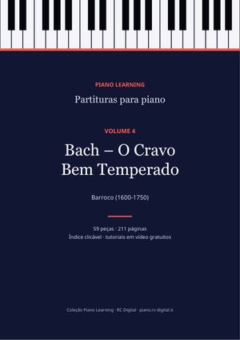
Volume 4Bach – O Cravo Bem Temperado59 peças · 211 páginas Volume 5Mozart, Haydn e o Classicismo40 peças · 116 páginas
Volume 5Mozart, Haydn e o Classicismo40 peças · 116 páginas Volume 6Beethoven I18 peças · 125 páginas
Volume 6Beethoven I18 peças · 125 páginas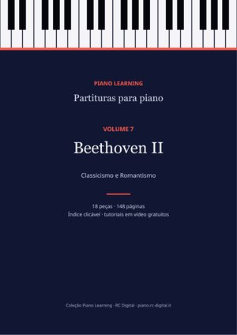
Volume 7Beethoven II18 peças · 148 páginas Volume 8Chopin46 peças · 186 páginas
Volume 8Chopin46 peças · 186 páginas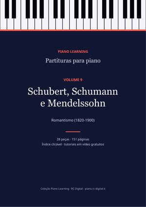
Volume 9Schubert, Schumann e Mendelssohn28 peças · 151 páginas Volume 10Liszt, Tchaikovsky, Grieg e os russos37 peças · 230 páginas
Volume 10Liszt, Tchaikovsky, Grieg e os russos37 peças · 230 páginas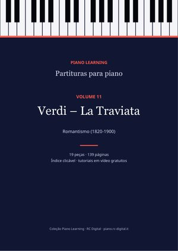
Volume 11Verdi – La Traviata19 peças · 139 páginas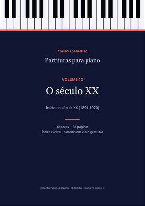
Volume 12O século XX40 peças · 136 páginas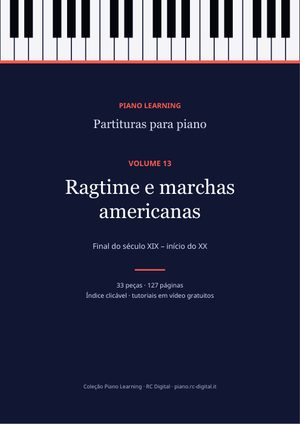
Volume 13Ragtime e marchas americanas33 peças · 127 páginas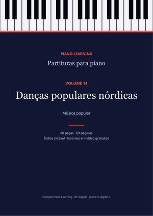
Volume 14Danças populares nórdicas60 peças · 69 páginasTocas num título do índice e já estás na página certa. Também há marcadores.
Umas linhas para saberes quem escreveu a música que estás a tocar.
Da partitura ao vídeo com as notas que caem, em cada peça que o tem.
Com uma só compra descarregas a edição no idioma que preferires.
A primeira página de quatro peças da coleção. Toca numa página para abrir a peça.
Em PDF. Podes abri-las no computador, no tablet e no telemóvel, e também imprimi-las. Cada volume é um único ficheiro com índice clicável e marcadores.
Cada compra inclui a edição em 10 idiomas: italiano, inglês, alemão, espanhol, francês, português, russo, chinês, japonês e coreano. Descarregas a que preferires.
Logo após o pagamento abre-se a página de download e recebes um e-mail com o link. Cada volume avulso é um PDF; a coleção completa é um ficheiro ZIP por idioma com os 14 PDF (cerca de 50 MB).
Sim. São edições livres (domínio público ou Creative Commons) e nas páginas deste site tens o link gratuito, peça a peça. Com a coleção tens todas organizadas por compositor e período, com índice, biografias, links para os tutoriais e os créditos completos de cada edição.
Não. O Volume 15, «Canções de Natal e melodias fáceis», compra-se à parte por 3,99 €. A coleção completa inclui os volumes 1 a 14.
Pagamento seguro com Payhip e download imediato por e-mail. As partituras são edições livres (domínio público ou Creative Commons): também as encontras grátis, peça a peça, nas páginas deste site; aqui tens todas organizadas num só ficheiro, com os créditos completos de cada edição.